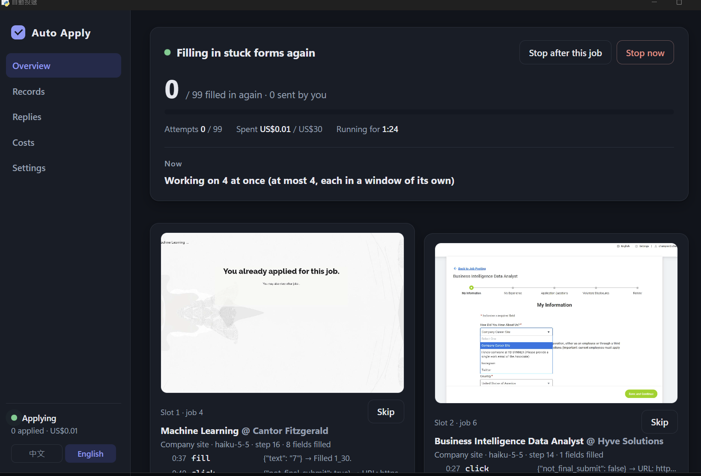
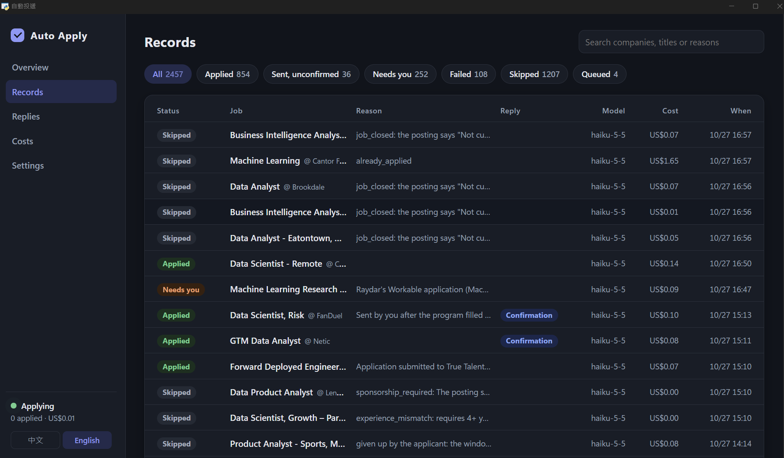
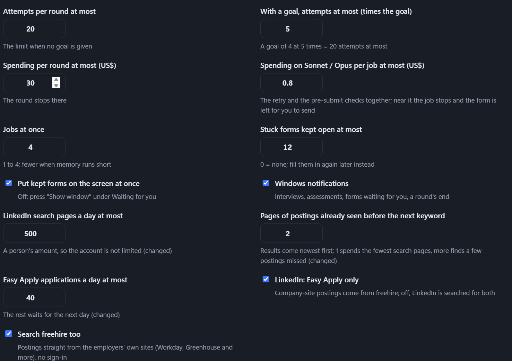

Agentic Job-Application Pipeline — Claude Tool Use in a Real Browser
Auto Job Applier turns job hunting into one command: find postings → apply to each → keep a record of every one. It searches LinkedIn for Easy Apply postings and freehire, whose keyless API serves postings crawled straight from employers' own sites (Workday, Greenhouse, Ashby and others). A Claude tool-use agent then drives a real Chrome browser through each application — creating employer accounts, reading verification emails, filling every field, uploading the résumé and the best-fitting cover letter, and submitting — while a stronger model checks the form against the applicant's data before Submit is pressed. Afterwards it reads the inbox and matches employer replies (interview invitations, assessments, rejections) to each application. The project started as a browser extension plus local service that captures job postings into Excel with Groq AI.
Each round searches first, then works through the queue — the postings just found first, then older ones still waiting, newest first. Every job passes through the same stages; the route chosen after triage decides which model fills the form and whether it is reviewed before Submit.
| Stage | What it does |
|---|---|
| discover | Searches LinkedIn (Easy Apply only) and freehire (US only) with the same keywords, filtering by title words, clearance requirements and experience level. A posting already on record, or the same title at the same company, is not queued again. |
| triage | Claude Haiku reads the job description once and decides whether to apply: no sponsorship, too many years required, internships and work unrelated to the title are skipped. About US$0.002 per job. |
| route | Looks at where Apply leads — a LinkedIn Easy Apply dialog, the employer's own site, or a job board — and picks that route's model and retry policy. |
| agent | A Claude tool-use loop drives Playwright-controlled Chrome: it reads text snapshots of the page, creates or signs in to employer accounts, fetches email codes and links, fills every field, and uploads the résumé and cover letter. |
| pre-submit review | On the employer-site and job-board routes, Claude Opus checks what was filled in against the applicant's data before Submit is pressed. Problems go back to be fixed; if it is still wrong after two rounds, nothing is submitted. |
| submit + verify | Submits, confirms through the confirmation page or a confirmation email, and records the job as applied, submitted_unverified, skipped, blocked or failed — with evidence, screenshots and cost. |
| Route | When | If not finished |
|---|---|---|
| Easy Apply | The form is on LinkedIn — about US$0.01 per application | Run once more with Sonnet |
| Employer site | Apply leads to the employer's own site (Workday, Greenhouse, SuccessFactors …) | Run once more with Sonnet |
| Job board | Apply leads to a job board or reposting site — the agent never registers there; it only looks for the employer's own copy of the posting | Not run again |
An agent that submits applications under your name has to be accurate, cheap, and honest about what it could not do. Most of the design goes into those three things.
The agent never sees screenshots. Each snapshot lists interactive elements as [ref] role "label" state — across iframes, new tabs and open shadow DOM — and the agent acts on those refs. Text unchanged since the last snapshot is left out to save tokens.
Answers come only from the profile, the résumé and an answer bank of earlier answers. A required factual question with no answer stops the job as skipped; answer it once with python -m applier answers and every later form reuses it.
Haiku does the bulk of the work, Sonnet retries what Haiku could not finish, and Opus reviews before Submit. Spending is capped per run (US$30), per job (US$2.50), and on the stronger models per application (US$0.80).
When a filled-in form hits a CAPTCHA or a site error, the page is kept open (up to 12 at once, memory permitting) and brought to the front for you to submit. The program then watches the inbox for the confirmation email and records the result.
Up to 4 jobs run in parallel, each in its own off-screen Chrome window sharing one signed-in session. Two jobs of one company never run together, LinkedIn forms are filled one at a time as a person would, and no new window opens below 1.5 GB of free memory.
The mailbox app password and the employer-site password live in Windows Credential Manager — never written to a file, never sent to the model. Page text is treated as untrusted content, not instructions, and the agent never enters an SSN or government ID number.
python -m applier ui opens a desktop window (pywebview) that works only on this computer, in Chinese or English. Runs are processes of their own: closing the panel does not stop a run, and rounds started from a terminal or by Windows Task Scheduler (a round every few hours) show up there too. Every 15 minutes while it is open, the panel reads the mailbox over IMAP and matches employer replies to their applications.
| Page | Contents |
|---|---|
| Overview | Start a round (how many companies, how many hours back); progress toward the goal, spending, and a live screen and Skip button for each parallel slot |
| Records | Every job: each attempt's model and cost, the fields entered at Submit, the pre-submit check's verdict, and every step with screenshots |
| Replies | Interview invitations, assessments, rejections and confirmations matched to applications; reply rates by kind of role |
| Costs | Totals overall and for today, average per application; by date, by outcome and by model |
| Settings | Automatic schedule, questions waiting for an answer, job titles, sources, excluded companies, per-round limits, parallel jobs, notifications |

Overview during a run — four jobs at once, each slot streaming its own off-screen Chrome window, with the agent's latest tool calls (fill, click) listed under it and a Skip button per slot

Records — 2,457 jobs handled so far: 854 applied, 252 needing a person, 1,207 skipped (closed postings, no sponsorship, too many years required), each with its reason, the employer's reply, the model and the cost

Settings — attempts and spending per round, the Sonnet / Opus cap per job, jobs at once, stuck forms kept open, and LinkedIn's daily search and Easy Apply limits
Each model is matched to how much a mistake costs: the cheapest model handles every form first, and the strongest one is spent only where a wrong answer would be sent to an employer.
| Component | Model / Tool | Role |
|---|---|---|
| Triage | Claude Haiku 5.5 | Apply-or-skip decision, ~US$0.002/job |
| Form Filling | Claude Haiku 5.5 | Easy Apply, employer sites, job boards |
| Retry | Claude Sonnet 5.5 | Re-runs jobs the cheaper model did not finish |
| Pre-Submit Review | Claude Opus 5.5 | Checks every field against the applicant's data |
| Posting Extraction | Groq · llama-3.1-8b-instant | Browser extension: company, title, salary, location → Excel |
| Browser / Storage | Playwright · SQLite | Chrome automation; applier.db is the master record |
run_agent() drives the browser through the tools in tools.py until the agent calls finish(); finalize() then checks the outcome independently before it is recorded
fill_credentials, get_email_code, open_email_link), so passwords never pass through the model
asyncio.wait leak that kept every Playwright call's task in memory — measured at ~7 MB a minute, near 2 GB by the end of a round